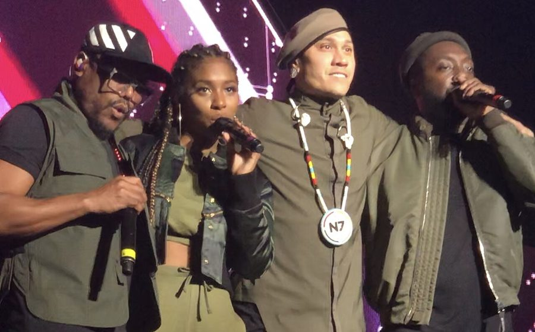

Aston Shuffle booked to support Black Eyed Peas!



We are not shitting you. First, it was roaring up into the top 5 of the Sony inthemix50. Then it was being handpicked by Ministry of Sound to mix one of the discs on the upcoming Annual release. So what’s next for Aston Shuffle? Hanging with Fergie and Will.i.am as the support DJs for the Black Eyed Peas on their Australian tour, of course. Duh! Well to be honest, we didn’t really see this one coming either, and it seems they didn’t either…
“We really don’t know how it happened, but we are incredibly stoked that they have picked us to be the support for their national tour,” Mikah Freeman from the duo told ITM this week. Some of the venues they’ll be playing on the tour include the Entertainment Centre in Brisbane, the Acer Arena in Sydney and the Rod Laver Arena in Melbourne. Massive.
“We never thought we would be playing at these kinds of venues before, come to think of it we are actually kinda shitting ourselves… Is it too late to back out??” With the first show kicking off this Thursday night, well yes it is too late. Man up boys!
Stay tuned for the continuing adventure/escapades of ACT’s favourite sons. We hear Britney Spears is looking for support DJs for her Australian tour? Go Aston Shuffle!